Systemic impact orientation has two directions: shaping impact orientation – planning, monitoring, evaluation – systemically, and, the second direction, orienting towards impact that emerges in the field and changes the system itself – in other words, pursuing systemic impact. Impact Up uses both: we believe that the orientation as well as the impact itself can be improved systemically. We work with many systemic methods – and in our work on systemic impact we draw strongly on the Systems Change literature, which places great value on networks.

Where impact orientation stands today
Impact orientation is established practice in the non-profit sector – and it speaks many languages: Theory of Change, Outcome Mapping, the impact logic based on the IOOI model with the impact ladder, and – in peace work – Reflecting on Peace Practice. All these logics make it distinguishable what is invested, what emerges from it, and where something in society ultimately changes. We use them as craft tools – which logic fits is decided by the initiative at hand.
This logic leads cleanly as far as the impact of a single initiative – and there it ends. The connecting question remains open: how do many individual impacts interlock in such a way that they produce a shared effect across the whole field? This question is rarely asked as yet; models and methods that answer it are little known, while the field of systemic practice is already growing in practice. This is precisely the point at which systemic impact orientation begins.
Two Directions
Systemic impact orientation joins two directions that carry equal weight. Both start from the same ground: impact.
Shaping impact orientation systemically. The core task – planning, monitoring, evaluation, impact logic – we approach with a systemic process stance. Whichever impact logic an initiative already brings with it remains usable; we extend it circularly: with feedback loops, with second-order observation and with co-construction – impact knowledge emerges together with the actors whose practice it describes. With Ruth Seliger we understand change as something that succeeds from within the system, above all through organisations: the process stance begins where organisations observe and interpret their own impact themselves.
Orienting towards systemic impact. The reference point of our work is impact that changes the system itself. Systemic impact comes from working at the system – in Donella Meadows's sense, at the leverage points where reinforcing and balancing feedback loops converge and small shifts can move a great deal. This includes a second gaze: field coherence – many impacts interlocking coherently, complementarily and connectably. Both lift the gaze from the single initiative to the system and its field: what do we want to co-create in society, and how do we recognise it?
Both directions belong together: the craft carries the gaze into the field, and the field gives the craft its reference point. The following sections unfold both – first the field, then the craft.

The Phase Transition
The second direction needs an image of its own: from the single ladder emerges a field. The gaze shifts from the step to the connection – from the height of one initiative to what emerges between many.
From the single impact ladder emerges a field of many impacts: each peak remains recognisable, yet through the connections a coherent pattern forms that no single ladder produces on its own.
Linear impact logic. The impact ladder thinks impact as a chain: from input follows output, from that outcome, from that impact. This makes the performance of a single initiative comprehensible and plannable. Its limit lies in remaining tied to the single initiative and treating impact as a controllable sequence – in complex fields where many actors influence one another, this picture falls short.
Phase transition. Where many impacts converge, something emerges that none of the individual ladders produces on its own. Impact forms between actors, not in the single step. It runs nonlinearly and in circles: results feed back onto their own preconditions, small shifts can amplify themselves. Such emergent effects have been described in the systems thinking tradition in monitoring and evaluation for some time.
Field impact. From many impacts comes a shared effect when they become coherent, complementary and connectable to one another – when what some set in motion connects with what others do. This is not a further step above impact. It is a different question: how from many individual peaks a field emerges that carries. Co-creative field work, as Jascha Rohr describes it, maps this field again and again anew and works with what shifts there.
Impact reflection
Here the first direction becomes concrete. Together with you we look at your impact: we formulate it, plan on its basis, develop teams and structures along it – and keep coming back into conversation about what has actually happened. Impact in complex fields runs in circles and takes time; some of it stays invisible for long stretches. That is part of it – we hold it together and trace it. How you present your impact to the outside remains in your hands; we strengthen the view inwards and into the field.
In planning we work with a Theory of Change as an adaptable frame: it holds assumptions and impact pathways, and it moves along when the field changes. In reflection we begin with what can be observed – with changes in behaviour, in relationships and in practices – and work back from there to our own contribution. Approaches such as Outcome Harvesting or Developmental Evaluation have shaped this way of working; for us it is simply shared impact reflection.
For this looking, the systemic tradition hands us three lenses – Bob Williams and Richard Hummelbrunner put them like this:
Boundaries ask what limits an initiative draws: who and what belongs to the system under consideration, what remains outside. Interrelationships direct the gaze to the interactions that carry a system, and to the feedback loops between them. Perspectives keep open from whose point of view impact is interpreted and which voices are heard. Together they make the complexity of a field discussable without reducing it to a single number.
The Mandate
The term “systemic impact orientation” is as yet unclaimed. Impact Up coins it and makes it methodologically available – as an institute where theory and practice come together as equals, and as an organising actor in the field that emerges around it. Our approach remains impact: close to the people and projects that carry it, and with the ambition of thinking its scope beyond the single initiative.
Systemic impact orientation is the umbrella term under which concrete approaches find their place – systemic consulting, co-creation, Developmental Evaluation (dynamic outcome development). Systems Change is one of them; we unfold it with its own deep logic on the linked page. As clear as these theories are: they live from the input of those they concern – systemic consulting from the system itself, co-creation from those involved, Systems Change from the Primary Actors. The real thing emerges only in collaboration. How the work distributes across four perspectives and becomes practical in three offerings, the main page sets out.
→ Systems Change → to the Philosophy → to the Perspectives → to the Offerings
Sources